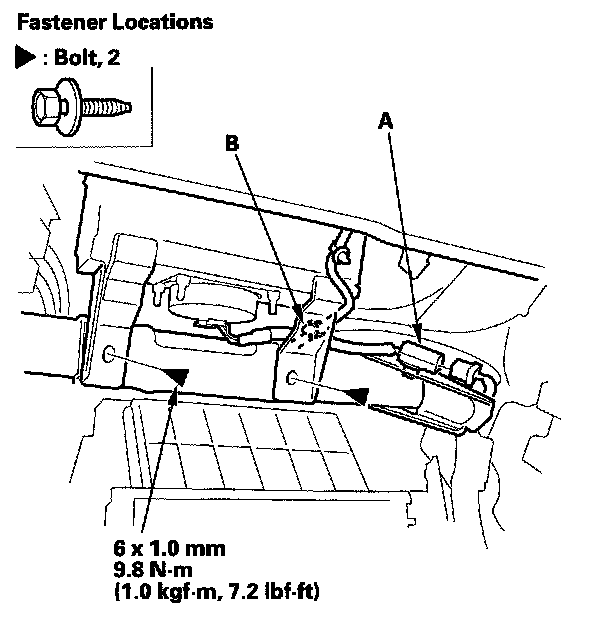
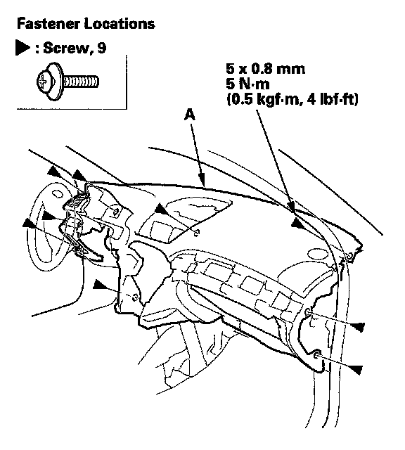

Dashboard Replacement
Dashboard ReplacementSpecial Tools Required
KTC trim tool set SOJATP2014 *
* Available through the American Honda Tool and Equipment Program
SRS components are located in this area. Review the SRS component locations and the precautions and procedures before doing repairs or service.
NOTE:
- Put on gloves to protect your hands.
- Take care not to scratch the dashboard, body, and other related parts.
- Take care not to bend the brackets.
- Use the appropriate tool from the KTC trim tool set to avoid damage when removing components.
1. Make sure you have the anti-theft codes for the audio and the navigation system (if equipped).
2. Disconnect the negative cable from the battery, and wait at least 3 minutes before beginning work.
3. Remove these items from the dashboard:
- Driver's outer dashboard trim
- Driver's dashboard lower cover
- Driver's dashboard undercover
- Passenger's dashboard undercover
- Glove box and damper
- Glove box striker
- Center upper panel
- Center panel
- Center console
- A-pillar trim, both sides
- Tweeter, both sides
- Instrument fascial
- Gauge control module
- Sunlight sensor
- Display unit, with navigation system
- GPS antenna
4. Adjust the steering column to full tilt down position and to the full telescopic pull position.
5. Remove the screws (A, B), then remove the driver's dashboard lower bracket (C) and the dashboard lower bracket (D).
6. Remove the parking brake lever mounting bolts (A, B), then lower the lever.
7. From the front of the dashboard, detach the harness clip (A).
8. Detach the connectors (A) from the dashboard duct in the center upper panel opening. Tie a string to the sunlight sensor harness connector (B), then pull the connector out through the hole (C) in the dashboard.

9. Disconnect and detach the passenger's airbag connector (A) from the steering hanger beam, and detach the dashboard wire harness clip (B). Remove the passenger's airbag mounting bolts.

10. From the front of the dashboard, remove the screws securing the dashboard (A).
11. Wrap the steering wheel with a shop towel to prevent damage.
12. Lift up on the dashboard (A). With an assistant holding the dashboard up, detach the dashboard wire harness clips (B) from both sides of the dashboard duct.
13. With the help of an assistant, remove the dashboard(A).
1. Lift up on the dashboard to release it from the guide pins (B).
2. Lift up on the dashboard until the driver's outside portion will be higher than the steering column.
3. While carefully moving the driver's outside portion of the dashboard over the steering column, rotate the dashboard toward the front passenger's door opening, and lower the passenger's side.
4. Remove the dashboard through the passenger's door opening.
NOTE: Lay the dashboard on its front or back. Do not rest it on the lower console opening or you may damage it.
14. From the front of the dashboard, remove the screws securing the dashboard duct (A).
15. From the back of the dashboard, remove the dashboard duct (A) from the dashboard (B).
16. Install the dashboard in the reverse order of removal, and note these items:
- Before tightening the bolts, make sure the dashboard wire harness is not pinched.
- Make sure the dashboard fits onto the guide pins correctly.
- Replace the passenger's airbag mounting bolts with new ones.
- Make sure the connectors are plugged in properly.
- Reconnect the negative cable to the battery.
- Enter the anti-theft codes for the audio and navigation system (if equipped).
- Set the clock.
- Check for any DTCs that may have been set during repairs, and clear them.
- Do the steering column position memorization.